<!DOCTYPE html>
<html lang="en">
<head>
  <meta charset="utf-8">
  <meta name="viewport" content="width=device-width, initial-scale=1.0">
  <title>Chapter 1 (Pages 7-26) - Class 9 Basic_science</title>
  <style>

:root {
  --bg-color: #fcfcfd;
  --card-bg: #ffffff;
  --text-color: #1e293b;
  --text-muted: #64748b;
  --primary-color: #0284c7;
  --primary-light: #e0f2fe;
  --border-color: #e2e8f0;
  --radius: 10px;
  --shadow: 0 4px 6px -1px rgb(0 0 0 / 0.05), 0 2px 4px -2px rgb(0 0 0 / 0.05);
}

body {
  font-family: -apple-system, BlinkMacSystemFont, "Segoe UI", Roboto, "Noto Sans Malayalam", "Manjari", "Gayathri", sans-serif;
  background-color: var(--bg-color);
  color: var(--text-color);
  line-height: 1.8;
  font-size: 1.1rem;
  margin: 0;
  padding: 0;
}

.container {
  max-width: 860px;
  margin: 0 auto;
  padding: 2.5rem 1.5rem 5rem 1.5rem;
}

header {
  margin-bottom: 2.5rem;
  padding-bottom: 1.5rem;
  border-bottom: 2px solid var(--border-color);
}

.badge-row {
  display: flex;
  gap: 0.5rem;
  margin-bottom: 0.75rem;
  flex-wrap: wrap;
}

.badge {
  display: inline-block;
  font-size: 0.75rem;
  font-weight: 700;
  text-transform: uppercase;
  letter-spacing: 0.05em;
  padding: 0.25rem 0.65rem;
  border-radius: 9999px;
  background: var(--primary-light);
  color: var(--primary-color);
}

.badge-medium {
  background: #fef3c7;
  color: #b45309;
}

.badge-class {
  background: #dcfce7;
  color: #15803d;
}

h1 {
  font-size: 2.1rem;
  font-weight: 800;
  margin: 0.5rem 0 1rem 0;
  line-height: 1.3;
  color: #0f172a;
}

.nav-bar {
  display: flex;
  justify-content: space-between;
  margin: 1.5rem 0;
  font-size: 0.95rem;
  flex-wrap: wrap;
  gap: 0.5rem;
}

.nav-bar a {
  color: var(--primary-color);
  text-decoration: none;
  font-weight: 600;
  padding: 0.5rem 1rem;
  border-radius: var(--radius);
  background: var(--card-bg);
  border: 1px solid var(--border-color);
  transition: all 0.2s ease;
}

.nav-bar a:hover {
  background: var(--primary-light);
  border-color: var(--primary-color);
}

.nav-bar .disabled {
  color: var(--text-muted);
  pointer-events: none;
  border-color: transparent;
  background: transparent;
}

.page-section {
  background: var(--card-bg);
  border: 1px solid var(--border-color);
  border-radius: var(--radius);
  box-shadow: var(--shadow);
  padding: 2rem;
  margin-bottom: 2.5rem;
}

.page-header {
  display: flex;
  align-items: center;
  justify-content: space-between;
  margin-bottom: 1.25rem;
  padding-bottom: 0.5rem;
  border-bottom: 1px dashed var(--border-color);
}

.page-number {
  font-size: 0.8rem;
  font-weight: 700;
  text-transform: uppercase;
  color: var(--text-muted);
  letter-spacing: 0.05em;
}

.page-content p {
  margin: 0 0 1.25rem 0;
  white-space: pre-wrap;
  word-break: break-word;
}

.page-content p:last-child {
  margin-bottom: 0;
}

.diagram-card {
  margin: 2rem 0;
  text-align: center;
  background: #f8fafc;
  border: 1px solid var(--border-color);
  border-radius: var(--radius);
  padding: 1rem;
  overflow: hidden;
}

.diagram-card img {
  max-width: 100%;
  height: auto;
  border-radius: calc(var(--radius) - 4px);
  display: inline-block;
  box-shadow: 0 2px 4px rgba(0,0,0,0.04);
}

.diagram-card figcaption {
  font-size: 0.85rem;
  color: var(--text-muted);
  margin-top: 0.75rem;
  font-weight: 500;
}

footer {
  margin-top: 3rem;
  padding-top: 2rem;
  border-top: 2px solid var(--border-color);
}

  </style>
</head>
<body>
  <div class="container">
    <header>
      <div class="badge-row">
        <span class="badge badge-class">Class 9</span>
        <span class="badge badge-medium">English Medium</span>
        <span class="badge">Basic science</span>
        <span class="badge">Part 1</span>
      </div>
      <h1>Chapter 1 (Pages 7-26)</h1>
      <div class="nav-bar"><span class="nav-bar disabled"></span><a href="index.html">☰ Index</a><a href="part_1_chapter_02.html">Chapter 2 (Pages 27-46) →</a></div>
    </header>
    <main>
      <section class="page-section" id="page-7">
  <div class="page-header"><span class="page-number">Page 7</span></div>
  <figure class="diagram-card" id="fig_ch01_p007_01"><figcaption>Figure fig_ch01_p007_01 (Page 7)</figcaption></figure>
  <figure class="diagram-card" id="fig_ch01_p007_02"><figcaption>Figure fig_ch01_p007_02 (Page 7)</figcaption></figure>
  <figure class="diagram-card" id="fig_ch01_p007_03"><figcaption>Figure fig_ch01_p007_03 (Page 7)</figcaption></figure>
  <figure class="diagram-card" id="fig_ch01_p007_04"><figcaption>Figure fig_ch01_p007_04 (Page 7)</figcaption></figure>
  <figure class="diagram-card" id="fig_ch01_p007_05"><figcaption>Figure fig_ch01_p007_05 (Page 7)</figcaption></figure>
  <figure class="diagram-card" id="fig_ch01_p007_06"><figcaption>Figure fig_ch01_p007_06 (Page 7)</figcaption></figure>
  <figure class="diagram-card" id="fig_ch01_p007_07"><figcaption>Figure fig_ch01_p007_07 (Page 7)</figcaption></figure>
  <figure class="diagram-card" id="fig_ch01_p007_08"><figcaption>Figure fig_ch01_p007_08 (Page 7)</figcaption></figure>
  <figure class="diagram-card" id="fig_ch01_p007_09"><figcaption>Figure fig_ch01_p007_09 (Page 7)</figcaption></figure>
  <figure class="diagram-card" id="fig_ch01_p007_10"><figcaption>Figure fig_ch01_p007_10 (Page 7)</figcaption></figure>
  <figure class="diagram-card" id="fig_ch01_p007_11"><figcaption>Figure fig_ch01_p007_11 (Page 7)</figcaption></figure>
  <figure class="diagram-card" id="fig_ch01_p007_12"><figcaption>Figure fig_ch01_p007_12 (Page 7)</figcaption></figure>
  <figure class="diagram-card" id="fig_ch01_p007_13"><figcaption>Figure fig_ch01_p007_13 (Page 7)</figcaption></figure>
  <figure class="diagram-card" id="fig_ch01_p007_14"><figcaption>Figure fig_ch01_p007_14 (Page 7)</figcaption></figure>
  <figure class="diagram-card" id="fig_ch01_p007_15"><figcaption>Figure fig_ch01_p007_15 (Page 7)</figcaption></figure>
  <figure class="diagram-card" id="fig_ch01_p007_16"><figcaption>Figure fig_ch01_p007_16 (Page 7)</figcaption></figure>
  <figure class="diagram-card" id="fig_ch01_p007_17"><figcaption>Figure fig_ch01_p007_17 (Page 7)</figcaption></figure>
  <figure class="diagram-card" id="fig_ch01_p007_18"><figcaption>Figure fig_ch01_p007_18 (Page 7)</figcaption></figure>
  <figure class="diagram-card" id="fig_ch01_p007_19"><figcaption>Figure fig_ch01_p007_19 (Page 7)</figcaption></figure>
  <figure class="diagram-card" id="fig_ch01_p007_20"><figcaption>Figure fig_ch01_p007_20 (Page 7)</figcaption></figure>
  <figure class="diagram-card" id="fig_ch01_p007_21"><figcaption>Figure fig_ch01_p007_21 (Page 7)</figcaption></figure>
  <figure class="diagram-card" id="fig_ch01_p007_22"><figcaption>Figure fig_ch01_p007_22 (Page 7)</figcaption></figure>
  <figure class="diagram-card" id="fig_ch01_p007_23"><figcaption>Figure fig_ch01_p007_23 (Page 7)</figcaption></figure>
  <figure class="diagram-card" id="fig_ch01_p007_24"><figcaption>Figure fig_ch01_p007_24 (Page 7)</figcaption></figure>
  <div class="page-content">
    <p>1</p>
    <p>MOVING FORWARD
FROM THE STONE AGE</p>
    <p>We saw in our last letter that
the chief difference between
man and the other animals was
the intelligence of man. This
intelligence made him clever
and stronger than enormous
wild animals who would
otherwise have destroyed him...
The primitive humans had
no special weapons to fight</p>
    <p>his enemies. He could only
throw stones at them. Then he
began to make out of stone:
axes, spears and many other
things, including fine stone
needles. We saw many of these
stone weapons in the South
Kensington (London) Museum
and also in the museum in
Geneva.</p>
    <p>This excerpt is taken from Jawaharlal Nehru’s ‘Letters from a Father to his Daughter.’
This letter refers to the life of primitive humans.
What does he say about the kind of tools that were used by humans to protect
themselves from wild animals?
z Stone axe
</p>
    <p>z</p>
    <p></p>
    <p>z</p>
  </div>
</section><section class="page-section" id="page-8">
  <div class="page-header"><span class="page-number">Page 8</span></div>
  <figure class="diagram-card" id="fig_ch01_p008_01"><figcaption>Figure fig_ch01_p008_01 (Page 8)</figcaption></figure>
  <figure class="diagram-card" id="fig_ch01_p008_02"><figcaption>Figure fig_ch01_p008_02 (Page 8)</figcaption></figure>
  <figure class="diagram-card" id="fig_ch01_p008_03"><figcaption>Figure fig_ch01_p008_03 (Page 8)</figcaption></figure>
  <figure class="diagram-card" id="fig_ch01_p008_04"><figcaption>Figure fig_ch01_p008_04 (Page 8)</figcaption></figure>
  <figure class="diagram-card" id="fig_ch01_p008_05"><figcaption>Figure fig_ch01_p008_05 (Page 8)</figcaption></figure>
  <figure class="diagram-card" id="fig_ch01_p008_06"><figcaption>Figure fig_ch01_p008_06 (Page 8)</figcaption></figure>
  <figure class="diagram-card" id="fig_ch01_p008_07"><figcaption>Figure fig_ch01_p008_07 (Page 8)</figcaption></figure>
  <figure class="diagram-card" id="fig_ch01_p008_08">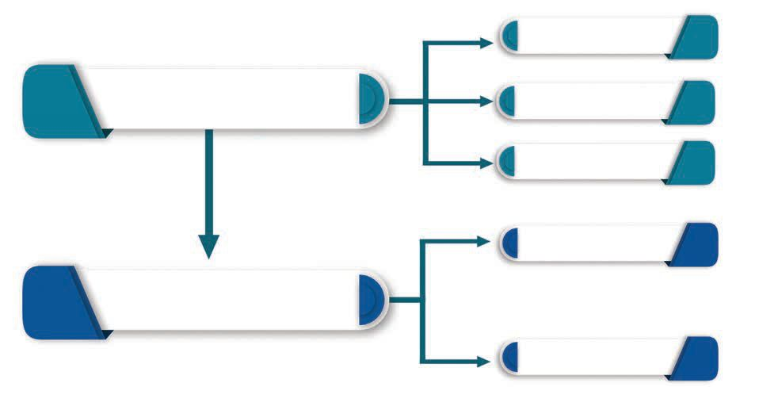<figcaption>Figure fig_ch01_p008_08 (Page 8)</figcaption></figure>
  <div class="page-content">
    <p>Chapter 1</p>
    <p>What could be the purposes for which humans in that period
used such tools?
</p>
    <p>z</p>
    <p>For protecting themselves from animals</p>
    <p>z</p>
    <p>For hunting</p>
    <p>z</p>
    <p>The tools developed for the above mentioned purposes were
made of stone in the beginning. Later, stone was replaced by
metal.
Archaeologists divide human history into different stages on the
basis of the materials used for making tools.
Palaeolithic Age</p>
    <p>Stone Age</p>
    <p>Mesolithic Age
Neolithic Age</p>
    <p>Bronze Age</p>
    <p>Metal Age
Iron Age</p>
    <p>Stone Age
+DYH\RXHYHUWKRXJKWZK\WKHÀUVWSKDVHRIKXPDQKLVWRU\ZDV
called the Stone Age? Humans used stones to make tools and
weapons during that period. So, historians describe this phase
as Stone Age. Based on the method used to make stone tools,
the stone age is divided into three: Palaeolithic, Mesolithic and
Neolithic.</p>
    <p>8</p>
    <p>Social Science I</p>
  </div>
</section><section class="page-section" id="page-9">
  <div class="page-header"><span class="page-number">Page 9</span></div>
  <figure class="diagram-card" id="fig_ch01_p009_01"><figcaption>Figure fig_ch01_p009_01 (Page 9)</figcaption></figure>
  <figure class="diagram-card" id="fig_ch01_p009_02"><figcaption>Figure fig_ch01_p009_02 (Page 9)</figcaption></figure>
  <figure class="diagram-card" id="fig_ch01_p009_03"><figcaption>Figure fig_ch01_p009_03 (Page 9)</figcaption></figure>
  <figure class="diagram-card" id="fig_ch01_p009_04"><figcaption>Figure fig_ch01_p009_04 (Page 9)</figcaption></figure>
  <figure class="diagram-card" id="fig_ch01_p009_05"><figcaption>Figure fig_ch01_p009_05 (Page 9)</figcaption></figure>
  <figure class="diagram-card" id="fig_ch01_p009_06"><figcaption>Figure fig_ch01_p009_06 (Page 9)</figcaption></figure>
  <figure class="diagram-card" id="fig_ch01_p009_07"><figcaption>Figure fig_ch01_p009_07 (Page 9)</figcaption></figure>
  <figure class="diagram-card" id="fig_ch01_p009_08"><figcaption>Figure fig_ch01_p009_08 (Page 9)</figcaption></figure>
  <figure class="diagram-card" id="fig_ch01_p009_09"><figcaption>Figure fig_ch01_p009_09 (Page 9)</figcaption></figure>
  <figure class="diagram-card" id="fig_ch01_p009_10"><figcaption>Figure fig_ch01_p009_10 (Page 9)</figcaption></figure>
  <figure class="diagram-card" id="fig_ch01_p009_11">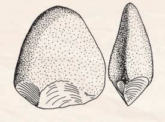<figcaption>Figure fig_ch01_p009_11 (Page 9)</figcaption></figure>
  <figure class="diagram-card" id="fig_ch01_p009_12">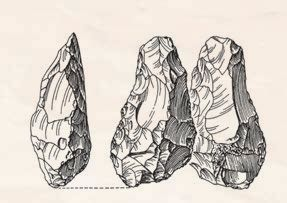<figcaption>Figure fig_ch01_p009_12 (Page 9)</figcaption></figure>
  <figure class="diagram-card" id="fig_ch01_p009_13">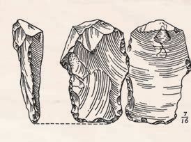<figcaption>Figure fig_ch01_p009_13 (Page 9)</figcaption></figure>
  <figure class="diagram-card" id="fig_ch01_p009_14"><figcaption>Figure fig_ch01_p009_14 (Page 9)</figcaption></figure>
  <figure class="diagram-card" id="fig_ch01_p009_15"><figcaption>Figure fig_ch01_p009_15 (Page 9)</figcaption></figure>
  <figure class="diagram-card" id="fig_ch01_p009_16"><figcaption>Figure fig_ch01_p009_16 (Page 9)</figcaption></figure>
  <figure class="diagram-card" id="fig_ch01_p009_17"><figcaption>Figure fig_ch01_p009_17 (Page 9)</figcaption></figure>
  <figure class="diagram-card" id="fig_ch01_p009_18"><figcaption>Figure fig_ch01_p009_18 (Page 9)</figcaption></figure>
  <div class="page-content">
    <p>Moving Forward from the Stone Age</p>
    <p>Let&#x27;s look at the features of each of these.</p>
    <p>Palaeolithic Age
The characteristic feature of the Palaeolithic age is the use of
rough (unpolished) stone tools. The term ‘Palaeolithic’ is derived
from two Greek words &#x27;palaeos&#x27; (old) and &#x27;lithos&#x27; (stone).
The making of tools is related to the means of subsistence of
primitive humans. Archaeologists point out that there were three
main stages in the use of tools. They are given below.</p>
    <p>Utilisation</p>
    <p>A method of using available stones
without changing their shape</p>
    <p>Fashioning</p>
    <p>The method of using available stones
by changing the shape according to
the need</p>
    <p>Standardisation</p>
    <p>7KH PHWKRG RI PDNLQJ VSHFLÀF
tools for each purpose</p>
    <p>The pictures given below are the different tools used by primitive
humans during different phases of Palaeolithic Age. Observe
them and list out the features of these tools.</p>
    <p>Pebble tools</p>
    <p>Biface core tools</p>
    <p>Flake tools</p>
    <p>Standard IX</p>
    <p>9</p>
  </div>
</section><section class="page-section" id="page-10">
  <div class="page-header"><span class="page-number">Page 10</span></div>
  <figure class="diagram-card" id="fig_ch01_p010_01"><figcaption>Figure fig_ch01_p010_01 (Page 10)</figcaption></figure>
  <figure class="diagram-card" id="fig_ch01_p010_02"><figcaption>Figure fig_ch01_p010_02 (Page 10)</figcaption></figure>
  <figure class="diagram-card" id="fig_ch01_p010_03"><figcaption>Figure fig_ch01_p010_03 (Page 10)</figcaption></figure>
  <figure class="diagram-card" id="fig_ch01_p010_04"><figcaption>Figure fig_ch01_p010_04 (Page 10)</figcaption></figure>
  <figure class="diagram-card" id="fig_ch01_p010_05"><figcaption>Figure fig_ch01_p010_05 (Page 10)</figcaption></figure>
  <figure class="diagram-card" id="fig_ch01_p010_06"><figcaption>Figure fig_ch01_p010_06 (Page 10)</figcaption></figure>
  <figure class="diagram-card" id="fig_ch01_p010_07"><figcaption>Figure fig_ch01_p010_07 (Page 10)</figcaption></figure>
  <figure class="diagram-card" id="fig_ch01_p010_08"><figcaption>Figure fig_ch01_p010_08 (Page 10)</figcaption></figure>
  <figure class="diagram-card" id="fig_ch01_p010_09"><figcaption>Figure fig_ch01_p010_09 (Page 10)</figcaption></figure>
  <figure class="diagram-card" id="fig_ch01_p010_10"><figcaption>Figure fig_ch01_p010_10 (Page 10)</figcaption></figure>
  <figure class="diagram-card" id="fig_ch01_p010_11"><figcaption>Figure fig_ch01_p010_11 (Page 10)</figcaption></figure>
  <figure class="diagram-card" id="fig_ch01_p010_12"><figcaption>Figure fig_ch01_p010_12 (Page 10)</figcaption></figure>
  <figure class="diagram-card" id="fig_ch01_p010_13"><figcaption>Figure fig_ch01_p010_13 (Page 10)</figcaption></figure>
  <figure class="diagram-card" id="fig_ch01_p010_14"><figcaption>Figure fig_ch01_p010_14 (Page 10)</figcaption></figure>
  <figure class="diagram-card" id="fig_ch01_p010_15"><figcaption>Figure fig_ch01_p010_15 (Page 10)</figcaption></figure>
  <figure class="diagram-card" id="fig_ch01_p010_16"><figcaption>Figure fig_ch01_p010_16 (Page 10)</figcaption></figure>
  <figure class="diagram-card" id="fig_ch01_p010_17"><figcaption>Figure fig_ch01_p010_17 (Page 10)</figcaption></figure>
  <figure class="diagram-card" id="fig_ch01_p010_18">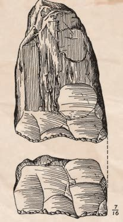<figcaption>Figure fig_ch01_p010_18 (Page 10)</figcaption></figure>
  <figure class="diagram-card" id="fig_ch01_p010_19">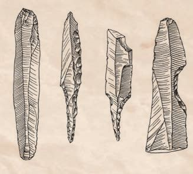<figcaption>Figure fig_ch01_p010_19 (Page 10)</figcaption></figure>
  <figure class="diagram-card" id="fig_ch01_p010_20">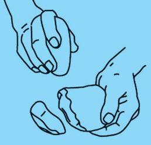<figcaption>Figure fig_ch01_p010_20 (Page 10)</figcaption></figure>
  <figure class="diagram-card" id="fig_ch01_p010_21"><figcaption>Figure fig_ch01_p010_21 (Page 10)</figcaption></figure>
  <figure class="diagram-card" id="fig_ch01_p010_22"><figcaption>Figure fig_ch01_p010_22 (Page 10)</figcaption></figure>
  <figure class="diagram-card" id="fig_ch01_p010_23"><figcaption>Figure fig_ch01_p010_23 (Page 10)</figcaption></figure>
  <figure class="diagram-card" id="fig_ch01_p010_24"><figcaption>Figure fig_ch01_p010_24 (Page 10)</figcaption></figure>
  <figure class="diagram-card" id="fig_ch01_p010_25">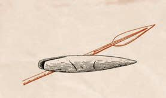<figcaption>Figure fig_ch01_p010_25 (Page 10)</figcaption></figure>
  <figure class="diagram-card" id="fig_ch01_p010_26">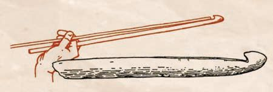<figcaption>Figure fig_ch01_p010_26 (Page 10)</figcaption></figure>
  <figure class="diagram-card" id="fig_ch01_p010_27">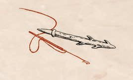<figcaption>Figure fig_ch01_p010_27 (Page 10)</figcaption></figure>
  <figure class="diagram-card" id="fig_ch01_p010_28"><figcaption>Figure fig_ch01_p010_28 (Page 10)</figcaption></figure>
  <figure class="diagram-card" id="fig_ch01_p010_29"><figcaption>Figure fig_ch01_p010_29 (Page 10)</figcaption></figure>
  <figure class="diagram-card" id="fig_ch01_p010_30"><figcaption>Figure fig_ch01_p010_30 (Page 10)</figcaption></figure>
  <div class="page-content">
    <p>Chapter 1</p>
    <p>Core and Flakes
When a piece of
stone is broken into
two or more pieces,
the largest piece is
called the core and
the smaller pieces
are called flakes.
Those made of core
stones are called core
tools and those made
of stone flakes are
FDOOHGÁDNHWRROV</p>
    <p>Chopper-Chopping
tools</p>
    <p>Stone tools made, using blade
technique</p>
    <p>Towards the end of the Palaeolithic period, humans
used tools made of bones in addition to stone tools.
Observe the pictures given below.</p>
    <p>Core
Flake</p>
    <p>Do the tools in the picture resemble any tool that you are familiar
with? If yes, which are they?
z
z
z</p>
    <p>10</p>
    <p>Social Science I</p>
  </div>
</section><section class="page-section" id="page-11">
  <div class="page-header"><span class="page-number">Page 11</span></div>
  <figure class="diagram-card" id="fig_ch01_p011_01"><figcaption>Figure fig_ch01_p011_01 (Page 11)</figcaption></figure>
  <figure class="diagram-card" id="fig_ch01_p011_02"><figcaption>Figure fig_ch01_p011_02 (Page 11)</figcaption></figure>
  <figure class="diagram-card" id="fig_ch01_p011_03"><figcaption>Figure fig_ch01_p011_03 (Page 11)</figcaption></figure>
  <figure class="diagram-card" id="fig_ch01_p011_04"><figcaption>Figure fig_ch01_p011_04 (Page 11)</figcaption></figure>
  <figure class="diagram-card" id="fig_ch01_p011_05"><figcaption>Figure fig_ch01_p011_05 (Page 11)</figcaption></figure>
  <figure class="diagram-card" id="fig_ch01_p011_06"><figcaption>Figure fig_ch01_p011_06 (Page 11)</figcaption></figure>
  <figure class="diagram-card" id="fig_ch01_p011_07"><figcaption>Figure fig_ch01_p011_07 (Page 11)</figcaption></figure>
  <figure class="diagram-card" id="fig_ch01_p011_08"><figcaption>Figure fig_ch01_p011_08 (Page 11)</figcaption></figure>
  <figure class="diagram-card" id="fig_ch01_p011_09"><figcaption>Figure fig_ch01_p011_09 (Page 11)</figcaption></figure>
  <figure class="diagram-card" id="fig_ch01_p011_10"><figcaption>Figure fig_ch01_p011_10 (Page 11)</figcaption></figure>
  <figure class="diagram-card" id="fig_ch01_p011_11"><figcaption>Figure fig_ch01_p011_11 (Page 11)</figcaption></figure>
  <figure class="diagram-card" id="fig_ch01_p011_12"><figcaption>Figure fig_ch01_p011_12 (Page 11)</figcaption></figure>
  <figure class="diagram-card" id="fig_ch01_p011_13"><figcaption>Figure fig_ch01_p011_13 (Page 11)</figcaption></figure>
  <figure class="diagram-card" id="fig_ch01_p011_14"><figcaption>Figure fig_ch01_p011_14 (Page 11)</figcaption></figure>
  <figure class="diagram-card" id="fig_ch01_p011_15"><figcaption>Figure fig_ch01_p011_15 (Page 11)</figcaption></figure>
  <figure class="diagram-card" id="fig_ch01_p011_16"><figcaption>Figure fig_ch01_p011_16 (Page 11)</figcaption></figure>
  <figure class="diagram-card" id="fig_ch01_p011_17"><figcaption>Figure fig_ch01_p011_17 (Page 11)</figcaption></figure>
  <figure class="diagram-card" id="fig_ch01_p011_18">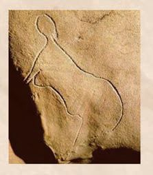<figcaption>Figure fig_ch01_p011_18 (Page 11)</figcaption></figure>
  <figure class="diagram-card" id="fig_ch01_p011_19"><figcaption>Figure fig_ch01_p011_19 (Page 11)</figcaption></figure>
  <figure class="diagram-card" id="fig_ch01_p011_20">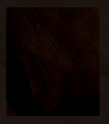<figcaption>Figure fig_ch01_p011_20 (Page 11)</figcaption></figure>
  <figure class="diagram-card" id="fig_ch01_p011_21">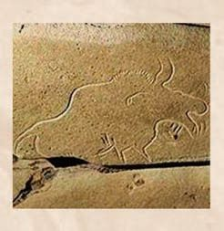<figcaption>Figure fig_ch01_p011_21 (Page 11)</figcaption></figure>
  <figure class="diagram-card" id="fig_ch01_p011_22"><figcaption>Figure fig_ch01_p011_22 (Page 11)</figcaption></figure>
  <figure class="diagram-card" id="fig_ch01_p011_23"><figcaption>Figure fig_ch01_p011_23 (Page 11)</figcaption></figure>
  <figure class="diagram-card" id="fig_ch01_p011_24"><figcaption>Figure fig_ch01_p011_24 (Page 11)</figcaption></figure>
  <figure class="diagram-card" id="fig_ch01_p011_25"><figcaption>Figure fig_ch01_p011_25 (Page 11)</figcaption></figure>
  <figure class="diagram-card" id="fig_ch01_p011_26">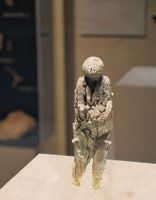<figcaption>Figure fig_ch01_p011_26 (Page 11)</figcaption></figure>
  <figure class="diagram-card" id="fig_ch01_p011_27"><figcaption>Figure fig_ch01_p011_27 (Page 11)</figcaption></figure>
  <figure class="diagram-card" id="fig_ch01_p011_28"><figcaption>Figure fig_ch01_p011_28 (Page 11)</figcaption></figure>
  <figure class="diagram-card" id="fig_ch01_p011_29"><figcaption>Figure fig_ch01_p011_29 (Page 11)</figcaption></figure>
  <figure class="diagram-card" id="fig_ch01_p011_30"><figcaption>Figure fig_ch01_p011_30 (Page 11)</figcaption></figure>
  <figure class="diagram-card" id="fig_ch01_p011_31"><figcaption>Figure fig_ch01_p011_31 (Page 11)</figcaption></figure>
  <figure class="diagram-card" id="fig_ch01_p011_32">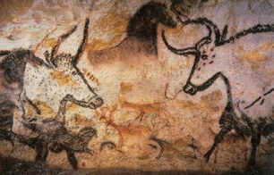<figcaption>Figure fig_ch01_p011_32 (Page 11)</figcaption></figure>
  <figure class="diagram-card" id="fig_ch01_p011_33"><figcaption>Figure fig_ch01_p011_33 (Page 11)</figcaption></figure>
  <figure class="diagram-card" id="fig_ch01_p011_34"><figcaption>Figure fig_ch01_p011_34 (Page 11)</figcaption></figure>
  <figure class="diagram-card" id="fig_ch01_p011_35"><figcaption>Figure fig_ch01_p011_35 (Page 11)</figcaption></figure>
  <figure class="diagram-card" id="fig_ch01_p011_36"><figcaption>Figure fig_ch01_p011_36 (Page 11)</figcaption></figure>
  <div class="page-content">
    <p>Moving Forward from the Stone Age</p>
    <p>Conduct a discussion on the topic &#x27;Tool making and
Technological Development during the Palaeolithic Period.&#x27;</p>
    <p>Chauvet, France</p>
    <p>Lascaux, France</p>
    <p>&amp;DUYHGÀJXUHVLQ&amp;XVVDF )UDQFH &amp;DYH</p>
    <p>Ivory Sculpture,
=DUD\VN5XVVLD</p>
    <p>Carvings on bones found in
La Garma Cave, Spain</p>
    <p>The pictures given above are the artistic creations of primitive
humans. What do you understand from these pictures?
It is clear from the pictures that various communication
WHFKQLTXHV VXFK DV VLPSOH ÁRZLQJ OLQHV FDUYHG LPDJHV
and sculptures were employed during the late Palaeolithic
period. Archaeologists are of the opinion that the depiction
RIDQLPDOV &amp;KDXYHWDQG/DVFDX[&amp;DYHV WKHFDUYHGÀJXUH
of an animal and a woman (Cussac Cave) and the Venus
ÀJXULQH =DUD\VN 5XVVLD  DUH UHODWHG WR ULWXDOV RU EHOLHIV
The carvings on bone found in La Garma Cave in Spain are
evidences of human artistic skills of that time.
Standard IX</p>
    <p>11</p>
  </div>
</section><section class="page-section" id="page-12">
  <div class="page-header"><span class="page-number">Page 12</span></div>
  <figure class="diagram-card" id="fig_ch01_p012_01"><figcaption>Figure fig_ch01_p012_01 (Page 12)</figcaption></figure>
  <figure class="diagram-card" id="fig_ch01_p012_02"><figcaption>Figure fig_ch01_p012_02 (Page 12)</figcaption></figure>
  <figure class="diagram-card" id="fig_ch01_p012_03"><figcaption>Figure fig_ch01_p012_03 (Page 12)</figcaption></figure>
  <figure class="diagram-card" id="fig_ch01_p012_04"><figcaption>Figure fig_ch01_p012_04 (Page 12)</figcaption></figure>
  <figure class="diagram-card" id="fig_ch01_p012_05"><figcaption>Figure fig_ch01_p012_05 (Page 12)</figcaption></figure>
  <figure class="diagram-card" id="fig_ch01_p012_06"><figcaption>Figure fig_ch01_p012_06 (Page 12)</figcaption></figure>
  <figure class="diagram-card" id="fig_ch01_p012_07"><figcaption>Figure fig_ch01_p012_07 (Page 12)</figcaption></figure>
  <figure class="diagram-card" id="fig_ch01_p012_08"><figcaption>Figure fig_ch01_p012_08 (Page 12)</figcaption></figure>
  <figure class="diagram-card" id="fig_ch01_p012_09"><figcaption>Figure fig_ch01_p012_09 (Page 12)</figcaption></figure>
  <figure class="diagram-card" id="fig_ch01_p012_10"><figcaption>Figure fig_ch01_p012_10 (Page 12)</figcaption></figure>
  <div class="page-content">
    <p>Chapter 1</p>
    <p>Various colours were used to draw the cave paintings. These
colours were made by grinding plants, tree bark and fruits, and
mixing with red stone powder. Such pictures were drawn on the
inner walls of the caves where sunlight could not reach. These
stone carvings were made using stone needles and sharp-edged
weapons. Paintings can also be seen on the ceilings of the caves.
Such pictures and sculptures are considered to be the evidence of
the intellectual and technical skill attained by primitive humans.
Let’s see what information could be gathered on human life from
the tools and art of the Palaeolithic Age.</p>
    <p>Used rough stone tools</p>
    <p>Lived in caves and open spaces</p>
    <p>Hunting and gathering were the
means of livelihood</p>
    <p>Palaeolithic
Age</p>
    <p>Bands were the basic units of
society
Men were engaged in hunting
and women, in gathering</p>
    <p>Food was not stored</p>
    <p>Nomadic life prevailed</p>
    <p>12</p>
    <p>Social Science I</p>
    <p>Bands
Bands are
small groups
of fewer than
hundred
members.
Band
members
were bound
by blood
relation.</p>
  </div>
</section><section class="page-section" id="page-13">
  <div class="page-header"><span class="page-number">Page 13</span></div>
  <figure class="diagram-card" id="fig_ch01_p013_01"><figcaption>Figure fig_ch01_p013_01 (Page 13)</figcaption></figure>
  <figure class="diagram-card" id="fig_ch01_p013_02"><figcaption>Figure fig_ch01_p013_02 (Page 13)</figcaption></figure>
  <figure class="diagram-card" id="fig_ch01_p013_03"><figcaption>Figure fig_ch01_p013_03 (Page 13)</figcaption></figure>
  <figure class="diagram-card" id="fig_ch01_p013_04"><figcaption>Figure fig_ch01_p013_04 (Page 13)</figcaption></figure>
  <figure class="diagram-card" id="fig_ch01_p013_05"><figcaption>Figure fig_ch01_p013_05 (Page 13)</figcaption></figure>
  <figure class="diagram-card" id="fig_ch01_p013_06"><figcaption>Figure fig_ch01_p013_06 (Page 13)</figcaption></figure>
  <figure class="diagram-card" id="fig_ch01_p013_07"><figcaption>Figure fig_ch01_p013_07 (Page 13)</figcaption></figure>
  <figure class="diagram-card" id="fig_ch01_p013_08"><figcaption>Figure fig_ch01_p013_08 (Page 13)</figcaption></figure>
  <figure class="diagram-card" id="fig_ch01_p013_09"><figcaption>Figure fig_ch01_p013_09 (Page 13)</figcaption></figure>
  <figure class="diagram-card" id="fig_ch01_p013_10"><figcaption>Figure fig_ch01_p013_10 (Page 13)</figcaption></figure>
  <figure class="diagram-card" id="fig_ch01_p013_11"><figcaption>Figure fig_ch01_p013_11 (Page 13)</figcaption></figure>
  <figure class="diagram-card" id="fig_ch01_p013_12">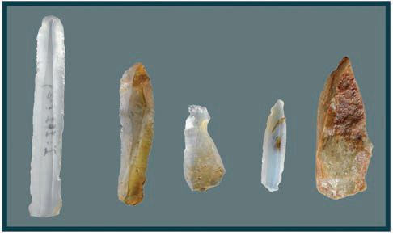<figcaption>Figure fig_ch01_p013_12 (Page 13)</figcaption></figure>
  <figure class="diagram-card" id="fig_ch01_p013_13">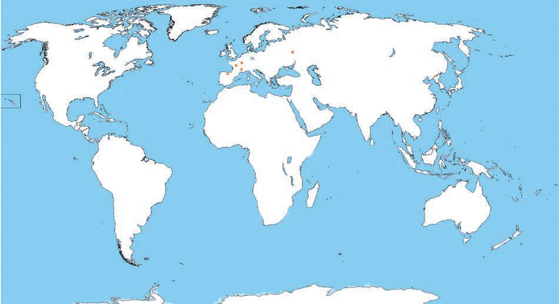<figcaption>Figure fig_ch01_p013_13 (Page 13)</figcaption></figure>
  <div class="page-content">
    <p>Moving Forward from the Stone Age</p>
    <p>Map 1
=DUD\VN
Lascaux cave Cussac Cave
Chauvet cave
La Garma cave</p>
    <p>Note down the features of the Palaeolithic centres mentioned on
the world map.</p>
    <p>Mesolithic Age
The Mesolithic is the stage of transition from the Palaeolithic to
the Neolithic. The word ‘Mesolithic’ is derived from two Greek
words ‘mesos’ (middle) and ‘lithos’ (stone).
Look at the given picture. Examine the
difference between Palaeolithic tools
and Mesolithic tools.
z</p>
    <p>These are smaller tools than the
ones used in the Palaeolithic Age.</p>
    <p>z</p>
    <p>This is the period when microliths
(very small tools) were used.
Mesolithic tools</p>
    <p>It has already been mentioned that the
development of human communication began towards the end
of the Palaeolithic period. But, in India, this development is</p>
    <p>Standard IX</p>
    <p>13</p>
  </div>
</section><section class="page-section" id="page-14">
  <div class="page-header"><span class="page-number">Page 14</span></div>
  <figure class="diagram-card" id="fig_ch01_p014_01"><figcaption>Figure fig_ch01_p014_01 (Page 14)</figcaption></figure>
  <figure class="diagram-card" id="fig_ch01_p014_02"><figcaption>Figure fig_ch01_p014_02 (Page 14)</figcaption></figure>
  <figure class="diagram-card" id="fig_ch01_p014_03"><figcaption>Figure fig_ch01_p014_03 (Page 14)</figcaption></figure>
  <figure class="diagram-card" id="fig_ch01_p014_04"><figcaption>Figure fig_ch01_p014_04 (Page 14)</figcaption></figure>
  <figure class="diagram-card" id="fig_ch01_p014_05"><figcaption>Figure fig_ch01_p014_05 (Page 14)</figcaption></figure>
  <figure class="diagram-card" id="fig_ch01_p014_06"><figcaption>Figure fig_ch01_p014_06 (Page 14)</figcaption></figure>
  <figure class="diagram-card" id="fig_ch01_p014_07"><figcaption>Figure fig_ch01_p014_07 (Page 14)</figcaption></figure>
  <figure class="diagram-card" id="fig_ch01_p014_08"><figcaption>Figure fig_ch01_p014_08 (Page 14)</figcaption></figure>
  <figure class="diagram-card" id="fig_ch01_p014_09"><figcaption>Figure fig_ch01_p014_09 (Page 14)</figcaption></figure>
  <figure class="diagram-card" id="fig_ch01_p014_10"><figcaption>Figure fig_ch01_p014_10 (Page 14)</figcaption></figure>
  <figure class="diagram-card" id="fig_ch01_p014_11"><figcaption>Figure fig_ch01_p014_11 (Page 14)</figcaption></figure>
  <figure class="diagram-card" id="fig_ch01_p014_12"><figcaption>Figure fig_ch01_p014_12 (Page 14)</figcaption></figure>
  <figure class="diagram-card" id="fig_ch01_p014_13"><figcaption>Figure fig_ch01_p014_13 (Page 14)</figcaption></figure>
  <figure class="diagram-card" id="fig_ch01_p014_14"><figcaption>Figure fig_ch01_p014_14 (Page 14)</figcaption></figure>
  <figure class="diagram-card" id="fig_ch01_p014_15"><figcaption>Figure fig_ch01_p014_15 (Page 14)</figcaption></figure>
  <figure class="diagram-card" id="fig_ch01_p014_16"><figcaption>Figure fig_ch01_p014_16 (Page 14)</figcaption></figure>
  <figure class="diagram-card" id="fig_ch01_p014_17"><figcaption>Figure fig_ch01_p014_17 (Page 14)</figcaption></figure>
  <figure class="diagram-card" id="fig_ch01_p014_18"><figcaption>Figure fig_ch01_p014_18 (Page 14)</figcaption></figure>
  <figure class="diagram-card" id="fig_ch01_p014_19"><figcaption>Figure fig_ch01_p014_19 (Page 14)</figcaption></figure>
  <figure class="diagram-card" id="fig_ch01_p014_20"><figcaption>Figure fig_ch01_p014_20 (Page 14)</figcaption></figure>
  <figure class="diagram-card" id="fig_ch01_p014_21">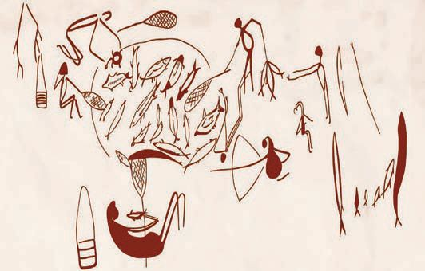<figcaption>Figure fig_ch01_p014_21 (Page 14)</figcaption></figure>
  <figure class="diagram-card" id="fig_ch01_p014_22"><figcaption>Figure fig_ch01_p014_22 (Page 14)</figcaption></figure>
  <figure class="diagram-card" id="fig_ch01_p014_23">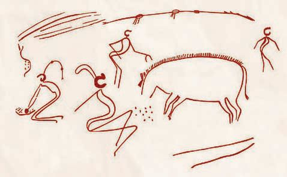<figcaption>Figure fig_ch01_p014_23 (Page 14)</figcaption></figure>
  <figure class="diagram-card" id="fig_ch01_p014_24"><figcaption>Figure fig_ch01_p014_24 (Page 14)</figcaption></figure>
  <figure class="diagram-card" id="fig_ch01_p014_25">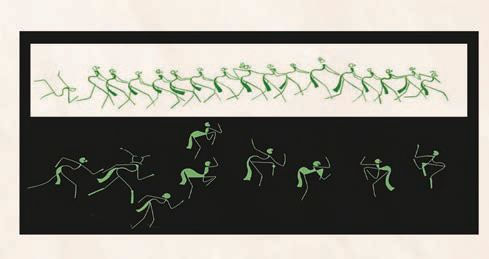<figcaption>Figure fig_ch01_p014_25 (Page 14)</figcaption></figure>
  <figure class="diagram-card" id="fig_ch01_p014_26"><figcaption>Figure fig_ch01_p014_26 (Page 14)</figcaption></figure>
  <figure class="diagram-card" id="fig_ch01_p014_27"><figcaption>Figure fig_ch01_p014_27 (Page 14)</figcaption></figure>
  <figure class="diagram-card" id="fig_ch01_p014_28">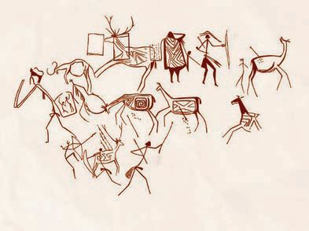<figcaption>Figure fig_ch01_p014_28 (Page 14)</figcaption></figure>
  <figure class="diagram-card" id="fig_ch01_p014_29"><figcaption>Figure fig_ch01_p014_29 (Page 14)</figcaption></figure>
  <figure class="diagram-card" id="fig_ch01_p014_30">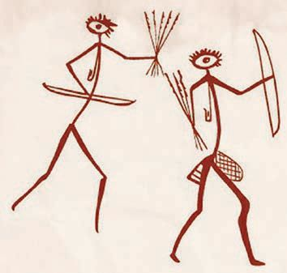<figcaption>Figure fig_ch01_p014_30 (Page 14)</figcaption></figure>
  <figure class="diagram-card" id="fig_ch01_p014_31"><figcaption>Figure fig_ch01_p014_31 (Page 14)</figcaption></figure>
  <div class="page-content">
    <p>Chapter 1</p>
    <p>mainly seen during the Mesolithic Age. The works of art in the
cave centres of Bhimbetka, Lakhajoar and Kathotia in Madhya
Pradesh help us understand the ways of life of humans during
that period.</p>
    <p>Bhimbetka</p>
    <p>Kathotia</p>
    <p>Lakhajoar</p>
    <p>Lakhajoar</p>
    <p>Lakhajoar
Lakhajoar</p>
    <p>14</p>
    <p>Social Science I</p>
  </div>
</section><section class="page-section" id="page-15">
  <div class="page-header"><span class="page-number">Page 15</span></div>
  <figure class="diagram-card" id="fig_ch01_p015_01"><figcaption>Figure fig_ch01_p015_01 (Page 15)</figcaption></figure>
  <figure class="diagram-card" id="fig_ch01_p015_02"><figcaption>Figure fig_ch01_p015_02 (Page 15)</figcaption></figure>
  <figure class="diagram-card" id="fig_ch01_p015_03"><figcaption>Figure fig_ch01_p015_03 (Page 15)</figcaption></figure>
  <figure class="diagram-card" id="fig_ch01_p015_04"><figcaption>Figure fig_ch01_p015_04 (Page 15)</figcaption></figure>
  <figure class="diagram-card" id="fig_ch01_p015_05"><figcaption>Figure fig_ch01_p015_05 (Page 15)</figcaption></figure>
  <div class="page-content">
    <p>Moving Forward from the Stone Age</p>
    <p>Look at the pictures given above and list down the activities depicted in them.
</p>
    <p></p>
    <p></p>
    <p>z Hunting</p>
    <p>z</p>
    <p>z</p>
    <p>z</p>
    <p>z</p>
    <p>z</p>
    <p>The ways of life of Mesolithic humans can be understood from these
pictures. The characteristics of this period are given below.
z
z
z
z
z</p>
    <p>Use of microliths or very small stone tools
$SDUWIURPKXQWLQJDQGJDWKHULQJÀVKLQJDOVREHFDPHDPHDQV
of livelihood
Indications of domestication of animals
Amusements
Division of labour based on gender
Mesolithic centres
Star Carr
Fahien Cave
6DUDL1DKDU5DL</p>
    <p>England
Sri Lanka
India (Uttar Pradesh)</p>
    <p>Star Carr - the Mesolithic Site in Europe
It is a Mesolithic open-air settlement in northeast England. The main attraction
of this site is the presence of organic remains. Tools made of stone and bone
were found here. Evidences of early carpentry have also been found here. It is
believed that early humans used this area as a temporary settlement.</p>
    <p>Standard IX</p>
    <p>15</p>
  </div>
</section><section class="page-section" id="page-16">
  <div class="page-header"><span class="page-number">Page 16</span></div>
  <figure class="diagram-card" id="fig_ch01_p016_01"><figcaption>Figure fig_ch01_p016_01 (Page 16)</figcaption></figure>
  <figure class="diagram-card" id="fig_ch01_p016_02"><figcaption>Figure fig_ch01_p016_02 (Page 16)</figcaption></figure>
  <figure class="diagram-card" id="fig_ch01_p016_03"><figcaption>Figure fig_ch01_p016_03 (Page 16)</figcaption></figure>
  <figure class="diagram-card" id="fig_ch01_p016_04"><figcaption>Figure fig_ch01_p016_04 (Page 16)</figcaption></figure>
  <figure class="diagram-card" id="fig_ch01_p016_05"><figcaption>Figure fig_ch01_p016_05 (Page 16)</figcaption></figure>
  <figure class="diagram-card" id="fig_ch01_p016_06"><figcaption>Figure fig_ch01_p016_06 (Page 16)</figcaption></figure>
  <figure class="diagram-card" id="fig_ch01_p016_07"><figcaption>Figure fig_ch01_p016_07 (Page 16)</figcaption></figure>
  <figure class="diagram-card" id="fig_ch01_p016_08"><figcaption>Figure fig_ch01_p016_08 (Page 16)</figcaption></figure>
  <figure class="diagram-card" id="fig_ch01_p016_09"><figcaption>Figure fig_ch01_p016_09 (Page 16)</figcaption></figure>
  <figure class="diagram-card" id="fig_ch01_p016_10"><figcaption>Figure fig_ch01_p016_10 (Page 16)</figcaption></figure>
  <figure class="diagram-card" id="fig_ch01_p016_11"><figcaption>Figure fig_ch01_p016_11 (Page 16)</figcaption></figure>
  <figure class="diagram-card" id="fig_ch01_p016_12"><figcaption>Figure fig_ch01_p016_12 (Page 16)</figcaption></figure>
  <figure class="diagram-card" id="fig_ch01_p016_13"><figcaption>Figure fig_ch01_p016_13 (Page 16)</figcaption></figure>
  <figure class="diagram-card" id="fig_ch01_p016_14"><figcaption>Figure fig_ch01_p016_14 (Page 16)</figcaption></figure>
  <figure class="diagram-card" id="fig_ch01_p016_15"><figcaption>Figure fig_ch01_p016_15 (Page 16)</figcaption></figure>
  <figure class="diagram-card" id="fig_ch01_p016_16"><figcaption>Figure fig_ch01_p016_16 (Page 16)</figcaption></figure>
  <figure class="diagram-card" id="fig_ch01_p016_17"><figcaption>Figure fig_ch01_p016_17 (Page 16)</figcaption></figure>
  <div class="page-content">
    <p>Chapter 1</p>
    <p>Sarai Nahar Rai: A Mesolithic Site in India
6DUDL1DKDU5DLLVORFDWHGRQWKHEDQNVRIWKH2[ERZ/DNHLQWKH3UDWDS1DJDUGLVWULFW
in Uttar Pradesh. Microliths, a major feature of the Mesolithic culture period, have
EHHQ IRXQG KHUH 7KH WDOO KXPDQ ERQHV IRXQG KHUH DUH VLJQLÀFDQW DUFKDHRORJLFDO
evidences. The height of men is 180 cm and that of women is 170 cm. It is believed
that bows and arrows were used for hunting. There is evidence to show that seeds
were collected and stored, and animal hide was used as clothing.</p>
    <p>List the differences between Palaeolithic and Mesolithic human
life.</p>
    <p>Neolithic Age
This is the period of radical change in human life; The word
‘Neolithic’ is derived from the words ‘neos’ (new) and ‘lithos’
(stone). The book Man Makes Himself by Gordon Childe refers
to two important changes in the Neolithic Age that transformed
human life.</p>
    <p>7KHÀUVWUHYROXWLRQWKDWWUDQVIRUPHGKXPDQHFRQRP\JDYHPDQFRQWURO
RYHU KLV RZQ IRRG VXSSO\ 0DQ EHJDQ WR SODQW FXOWLYDWH DQG LPSURYH
E\VHOHFWLRQHGLEOHJUDVVHVURRWVDQGWUHHV$QGKHVXFFHHGHGLQWDPLQJ
DQG ÀUPO\ DWWDFKLQJ WR KLV SHUVRQ FHUWDLQ VSHFLHV RI DQLPDO LQ UHWXUQ
IRUWKHIRGGHUKHZDVDEOHWRRIIHUWKHSURWHFWLRQKHFRXOGDIIRUGDQGWKH
IRUHWKRXJKWKHFRXOGH[HUFLVH7KHWZRVWHSVDUHFORVHO\UHODWHG</p>
    <p>What are the changes in the Neolithic Age mentioned in this
description?
</p>
    <p>z</p>
    <p></p>
    <p>z</p>
    <p>The change in human interaction with his surroundings is the
reason for these changes. Humans started new ways of living
during the Neolithic period. They are:</p>
    <p>16</p>
    <p>Social Science I</p>
  </div>
</section><section class="page-section" id="page-17">
  <div class="page-header"><span class="page-number">Page 17</span></div>
  <figure class="diagram-card" id="fig_ch01_p017_01"><figcaption>Figure fig_ch01_p017_01 (Page 17)</figcaption></figure>
  <figure class="diagram-card" id="fig_ch01_p017_02"><figcaption>Figure fig_ch01_p017_02 (Page 17)</figcaption></figure>
  <figure class="diagram-card" id="fig_ch01_p017_03"><figcaption>Figure fig_ch01_p017_03 (Page 17)</figcaption></figure>
  <figure class="diagram-card" id="fig_ch01_p017_04"><figcaption>Figure fig_ch01_p017_04 (Page 17)</figcaption></figure>
  <figure class="diagram-card" id="fig_ch01_p017_05">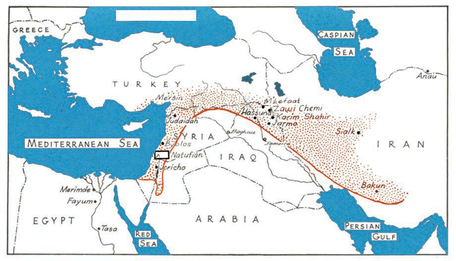<figcaption>Figure fig_ch01_p017_05 (Page 17)</figcaption></figure>
  <div class="page-content">
    <p>Moving Forward from the Stone Age
z</p>
    <p>Domestication of animals</p>
    <p>z</p>
    <p>Beginning of agriculture
Black Sea</p>
    <p>Map 2</p>
    <p>Observe the map. You can see the area marked in the shape of
a crescent. Based on available evidence, archaeologists say that
agriculture began in this area. This region is known as the ‘Fertile
Crescent.’ Can you identify the countries in this region?
Let us see the factors that led humans to begin agriculture and
domestication of animals.</p>
    <p>ST-427-2-SOC. SCI.-I-(E)-9-VOL-1</p>
    <p>Population growth
An increase in the number of
human settlements
Complex social organisation
Shortage of food products
Change in technology</p>
    <p>Standard IX</p>
    <p>17</p>
  </div>
</section><section class="page-section" id="page-18">
  <div class="page-header"><span class="page-number">Page 18</span></div>
  <figure class="diagram-card" id="fig_ch01_p018_01"><figcaption>Figure fig_ch01_p018_01 (Page 18)</figcaption></figure>
  <figure class="diagram-card" id="fig_ch01_p018_02"><figcaption>Figure fig_ch01_p018_02 (Page 18)</figcaption></figure>
  <figure class="diagram-card" id="fig_ch01_p018_03"><figcaption>Figure fig_ch01_p018_03 (Page 18)</figcaption></figure>
  <figure class="diagram-card" id="fig_ch01_p018_04"><figcaption>Figure fig_ch01_p018_04 (Page 18)</figcaption></figure>
  <figure class="diagram-card" id="fig_ch01_p018_05"><figcaption>Figure fig_ch01_p018_05 (Page 18)</figcaption></figure>
  <figure class="diagram-card" id="fig_ch01_p018_06"><figcaption>Figure fig_ch01_p018_06 (Page 18)</figcaption></figure>
  <figure class="diagram-card" id="fig_ch01_p018_07"><figcaption>Figure fig_ch01_p018_07 (Page 18)</figcaption></figure>
  <figure class="diagram-card" id="fig_ch01_p018_08"><figcaption>Figure fig_ch01_p018_08 (Page 18)</figcaption></figure>
  <figure class="diagram-card" id="fig_ch01_p018_09"><figcaption>Figure fig_ch01_p018_09 (Page 18)</figcaption></figure>
  <figure class="diagram-card" id="fig_ch01_p018_10">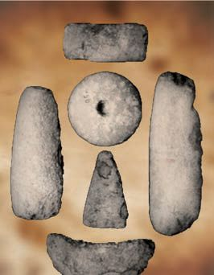<figcaption>Figure fig_ch01_p018_10 (Page 18)</figcaption></figure>
  <figure class="diagram-card" id="fig_ch01_p018_11"><figcaption>Figure fig_ch01_p018_11 (Page 18)</figcaption></figure>
  <figure class="diagram-card" id="fig_ch01_p018_12"><figcaption>Figure fig_ch01_p018_12 (Page 18)</figcaption></figure>
  <figure class="diagram-card" id="fig_ch01_p018_13">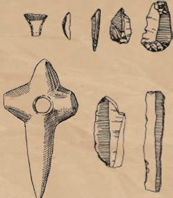<figcaption>Figure fig_ch01_p018_13 (Page 18)</figcaption></figure>
  <figure class="diagram-card" id="fig_ch01_p018_14"><figcaption>Figure fig_ch01_p018_14 (Page 18)</figcaption></figure>
  <figure class="diagram-card" id="fig_ch01_p018_15"><figcaption>Figure fig_ch01_p018_15 (Page 18)</figcaption></figure>
  <figure class="diagram-card" id="fig_ch01_p018_16"><figcaption>Figure fig_ch01_p018_16 (Page 18)</figcaption></figure>
  <figure class="diagram-card" id="fig_ch01_p018_17"><figcaption>Figure fig_ch01_p018_17 (Page 18)</figcaption></figure>
  <figure class="diagram-card" id="fig_ch01_p018_18"><figcaption>Figure fig_ch01_p018_18 (Page 18)</figcaption></figure>
  <figure class="diagram-card" id="fig_ch01_p018_19"><figcaption>Figure fig_ch01_p018_19 (Page 18)</figcaption></figure>
  <figure class="diagram-card" id="fig_ch01_p018_20"><figcaption>Figure fig_ch01_p018_20 (Page 18)</figcaption></figure>
  <figure class="diagram-card" id="fig_ch01_p018_21"><figcaption>Figure fig_ch01_p018_21 (Page 18)</figcaption></figure>
  <figure class="diagram-card" id="fig_ch01_p018_22"><figcaption>Figure fig_ch01_p018_22 (Page 18)</figcaption></figure>
  <figure class="diagram-card" id="fig_ch01_p018_23"><figcaption>Figure fig_ch01_p018_23 (Page 18)</figcaption></figure>
  <figure class="diagram-card" id="fig_ch01_p018_24"><figcaption>Figure fig_ch01_p018_24 (Page 18)</figcaption></figure>
  <div class="page-content">
    <p>Chapter 1</p>
    <p>3LFWXUHVRI1HROLWKLFWRROVDUHJLYHQKHUH2EVHUYHWKHPDQGÀQG
out their features.
z</p>
    <p>Polished tools</p>
    <p>z
z</p>
    <p>These tools helped humans to cultivate the land. They helped
them in tilling the soil and cutting down trees. This marked the
beginning of great changes in human life.
Agriculture and domestication of animals ensured the steady
availability of food products. As a result, permanent settlements
and agrarian villages came into existence. The storage of grains
became possible with the introduction of pottery and the use of
bricks made of clay. When the surplus production in agriculture
became possible, a section of society became free from agrarian
activities. They began to engage in other occupations such as
pottery making, weaving, etc. Thus, the society came to include
GLIIHUHQWRFFXSDWLRQDOJURXSV7KLVUHVXOWHGLQVLJQLÀFDQWFKDQJHV
in the social formation. The basis of the progress humans have
achieved today can be seen in the changes during the Neolithic
age. With reference to these changes, Gordon Childe, a renowned
DUFKDHRORJLVWQDPHGWKLVSHULRG¶1HROLWKLF5HYROXWLRQ·
Present the information given above on Neolithic changes in
WKHIRUPRIDÁRZFKDUW</p>
    <p>18</p>
    <p>Social Science I</p>
  </div>
</section><section class="page-section" id="page-19">
  <div class="page-header"><span class="page-number">Page 19</span></div>
  <figure class="diagram-card" id="fig_ch01_p019_01"><figcaption>Figure fig_ch01_p019_01 (Page 19)</figcaption></figure>
  <figure class="diagram-card" id="fig_ch01_p019_02"><figcaption>Figure fig_ch01_p019_02 (Page 19)</figcaption></figure>
  <figure class="diagram-card" id="fig_ch01_p019_03"><figcaption>Figure fig_ch01_p019_03 (Page 19)</figcaption></figure>
  <figure class="diagram-card" id="fig_ch01_p019_04"><figcaption>Figure fig_ch01_p019_04 (Page 19)</figcaption></figure>
  <figure class="diagram-card" id="fig_ch01_p019_05">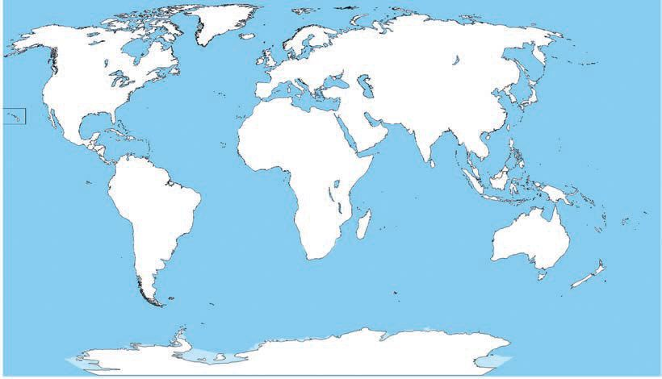<figcaption>Figure fig_ch01_p019_05 (Page 19)</figcaption></figure>
  <div class="page-content">
    <p>Moving Forward from the Stone Age
z</p>
    <p>Domestication of animals</p>
    <p>z</p>
    <p>z</p>
    <p>z</p>
    <p>z</p>
    <p>&amp;RPSOHWHWKHWDEOHEHORZE\REVHUYLQJWKHZRUOGPDSDQGÀQG
out the countries in which Neolithic sites are located.</p>
    <p>Map 3</p>
    <p>Jericho</p>
    <p>Neolithic centre</p>
    <p>Jarmo
Ali Kosh
Mehrgarh</p>
    <p>Country</p>
    <p>Jericho</p>
    <p>-------------------------------------------------</p>
    <p>Jarmo</p>
    <p>-------------------------------------------------</p>
    <p>Ali Kosh</p>
    <p>-------------------------------------------------</p>
    <p>Mehrgarh</p>
    <p>------------------------------------------------Standard IX</p>
    <p>19</p>
  </div>
</section><section class="page-section" id="page-20">
  <div class="page-header"><span class="page-number">Page 20</span></div>
  <figure class="diagram-card" id="fig_ch01_p020_01"><figcaption>Figure fig_ch01_p020_01 (Page 20)</figcaption></figure>
  <figure class="diagram-card" id="fig_ch01_p020_02"><figcaption>Figure fig_ch01_p020_02 (Page 20)</figcaption></figure>
  <figure class="diagram-card" id="fig_ch01_p020_03"><figcaption>Figure fig_ch01_p020_03 (Page 20)</figcaption></figure>
  <figure class="diagram-card" id="fig_ch01_p020_04"><figcaption>Figure fig_ch01_p020_04 (Page 20)</figcaption></figure>
  <figure class="diagram-card" id="fig_ch01_p020_05"><figcaption>Figure fig_ch01_p020_05 (Page 20)</figcaption></figure>
  <figure class="diagram-card" id="fig_ch01_p020_06"><figcaption>Figure fig_ch01_p020_06 (Page 20)</figcaption></figure>
  <figure class="diagram-card" id="fig_ch01_p020_07"><figcaption>Figure fig_ch01_p020_07 (Page 20)</figcaption></figure>
  <figure class="diagram-card" id="fig_ch01_p020_08">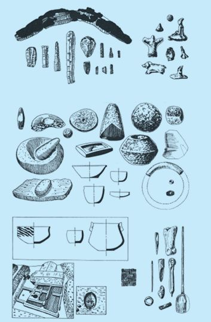<figcaption>Figure fig_ch01_p020_08 (Page 20)</figcaption></figure>
  <figure class="diagram-card" id="fig_ch01_p020_09"><figcaption>Figure fig_ch01_p020_09 (Page 20)</figcaption></figure>
  <figure class="diagram-card" id="fig_ch01_p020_10"><figcaption>Figure fig_ch01_p020_10 (Page 20)</figcaption></figure>
  <figure class="diagram-card" id="fig_ch01_p020_11"><figcaption>Figure fig_ch01_p020_11 (Page 20)</figcaption></figure>
  <figure class="diagram-card" id="fig_ch01_p020_12"><figcaption>Figure fig_ch01_p020_12 (Page 20)</figcaption></figure>
  <figure class="diagram-card" id="fig_ch01_p020_13"><figcaption>Figure fig_ch01_p020_13 (Page 20)</figcaption></figure>
  <figure class="diagram-card" id="fig_ch01_p020_14"><figcaption>Figure fig_ch01_p020_14 (Page 20)</figcaption></figure>
  <figure class="diagram-card" id="fig_ch01_p020_15"><figcaption>Figure fig_ch01_p020_15 (Page 20)</figcaption></figure>
  <figure class="diagram-card" id="fig_ch01_p020_16"><figcaption>Figure fig_ch01_p020_16 (Page 20)</figcaption></figure>
  <div class="page-content">
    <p>Chapter 1</p>
    <p>Jarmo in the Kurdish Hills of Iraq
5REHUW - %ULGHZRRG OHG WKH DUFKDHRORJLFDO
excavations in Jarmo in the Kurdish
Hills (modern Iraq). The people of Jarmo
cultivated barley and two varieties of wheat.
There were clear indications that they
domesticated goat and some other animals.
Their dwellings were small huts. They
PDGH ÀJXUHV RI DQLPDOV DQG KXPDQV ZLWK
FOD\$PRQJWKHKXPDQÀJXUHVWKH\PDGH
the most prominent was that of a pregnant
woman.</p>
    <p>Mehrgarh: The
Neolithic Site in the
Indian Subcontinent
Archaeologists consider
that Mehrgarh (now in
Pakistan) was a site in
ancient India, where
the important features
of Neolithic Age, like
domestication of animals
and plants began first.
This region is called
&#x27;the bread basket of
Baluchistan.&#x27;</p>
    <p>Analyse the different Stone Age
periods on the basis of the hints given
below, prepare a digital magazine and
present it in the Social Science Club.
Tools
z Ways of living
z Communication
z</p>
    <p>Metal Age
The Metal Age began when humans started using metals
LQVWHDG RI VWRQH 7KLV DJH FOHDUO\ UHÁHFWV WKH KXPDQ
SURJUHVVLQWHFKQRORJ\&amp;RSSHUZDVWKHÀUVWPHWDOXVHG
by humans.</p>
    <p>During this period humans learned the technique of
turning raw copper into weapons and tools. The presence
of copper was found in the early agrarian villages of Catal Huyuk
(Turkey), Cayonu (northern Syria) and Ali Kosh (Iran). It is
believed to have existed around 7000 BCE.</p>
    <p>20</p>
    <p>Social Science I</p>
  </div>
</section><section class="page-section" id="page-21">
  <div class="page-header"><span class="page-number">Page 21</span></div>
  <figure class="diagram-card" id="fig_ch01_p021_01"><figcaption>Figure fig_ch01_p021_01 (Page 21)</figcaption></figure>
  <figure class="diagram-card" id="fig_ch01_p021_02"><figcaption>Figure fig_ch01_p021_02 (Page 21)</figcaption></figure>
  <figure class="diagram-card" id="fig_ch01_p021_03"><figcaption>Figure fig_ch01_p021_03 (Page 21)</figcaption></figure>
  <figure class="diagram-card" id="fig_ch01_p021_04"><figcaption>Figure fig_ch01_p021_04 (Page 21)</figcaption></figure>
  <figure class="diagram-card" id="fig_ch01_p021_05"><figcaption>Figure fig_ch01_p021_05 (Page 21)</figcaption></figure>
  <figure class="diagram-card" id="fig_ch01_p021_06"><figcaption>Figure fig_ch01_p021_06 (Page 21)</figcaption></figure>
  <figure class="diagram-card" id="fig_ch01_p021_07"><figcaption>Figure fig_ch01_p021_07 (Page 21)</figcaption></figure>
  <figure class="diagram-card" id="fig_ch01_p021_08"><figcaption>Figure fig_ch01_p021_08 (Page 21)</figcaption></figure>
  <figure class="diagram-card" id="fig_ch01_p021_09"><figcaption>Figure fig_ch01_p021_09 (Page 21)</figcaption></figure>
  <figure class="diagram-card" id="fig_ch01_p021_10"><figcaption>Figure fig_ch01_p021_10 (Page 21)</figcaption></figure>
  <figure class="diagram-card" id="fig_ch01_p021_11">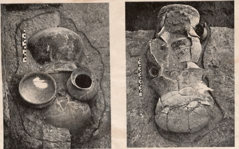<figcaption>Figure fig_ch01_p021_11 (Page 21)</figcaption></figure>
  <figure class="diagram-card" id="fig_ch01_p021_12">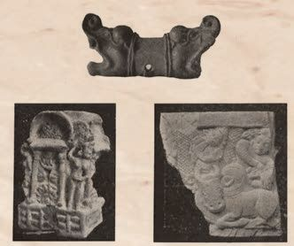<figcaption>Figure fig_ch01_p021_12 (Page 21)</figcaption></figure>
  <figure class="diagram-card" id="fig_ch01_p021_13"><figcaption>Figure fig_ch01_p021_13 (Page 21)</figcaption></figure>
  <figure class="diagram-card" id="fig_ch01_p021_14"><figcaption>Figure fig_ch01_p021_14 (Page 21)</figcaption></figure>
  <figure class="diagram-card" id="fig_ch01_p021_15"><figcaption>Figure fig_ch01_p021_15 (Page 21)</figcaption></figure>
  <figure class="diagram-card" id="fig_ch01_p021_16"><figcaption>Figure fig_ch01_p021_16 (Page 21)</figcaption></figure>
  <figure class="diagram-card" id="fig_ch01_p021_17"><figcaption>Figure fig_ch01_p021_17 (Page 21)</figcaption></figure>
  <div class="page-content">
    <p>Moving Forward from the Stone Age</p>
    <p>What are the advantages of copper tools over stone tools?
z</p>
    <p>Can be changed into suitable shape and form</p>
    <p>z</p>
    <p>Durability</p>
    <p>z
z</p>
    <p>Chalcolithic Age
We have already discussed the Stone Age. Even in the age of
copper tools, humans did not give up stone. This period, when
copper tools were used along with stone tools, is called the
Chalcolithic Age. In India, many remains of the Chalcolithic Age
DUHIRXQGLQ5DMDVWKDQ0DGK\D3UDGHVKDQG0DKDUDVKWUD</p>
    <p>Urn burials recovered from Daimabad
(Maharashtra)</p>
    <p>Artistic creations in clay and stone
from Nevasa (Maharashtra).</p>
    <p>Bronze Age</p>
    <p>%HWZHHQ  DQG  %&amp;( KXPDQV OHDUQHG WR KDUQHVV WKH IRUFH
RIR[HQDQGRIZLQGV3ORXJKZKHHOFDUWDQGERDWEHJDQWREHXVHG
0HWDOOXUJ\ DOVR GHYHORSHG IXUWKHU $V D UHVXOW DJULFXOWXUH EHFDPH
ZLGHVSUHDGDQGVXUSOXVSURGXFWLRQEHFDPHSRVVLEOH1RQDJULFXOWXUDO
SURGXFWLRQEHFDPHVWURQJHUDQGWKHUHE\KXPDQVHTXLSSHGWKHPVHOYHV
IRUXUEDQOLIH
Gordon Childe, Man Makes Himself
Standard IX</p>
    <p>21</p>
  </div>
</section><section class="page-section" id="page-22">
  <div class="page-header"><span class="page-number">Page 22</span></div>
  <figure class="diagram-card" id="fig_ch01_p022_01"><figcaption>Figure fig_ch01_p022_01 (Page 22)</figcaption></figure>
  <figure class="diagram-card" id="fig_ch01_p022_02"><figcaption>Figure fig_ch01_p022_02 (Page 22)</figcaption></figure>
  <figure class="diagram-card" id="fig_ch01_p022_03"><figcaption>Figure fig_ch01_p022_03 (Page 22)</figcaption></figure>
  <figure class="diagram-card" id="fig_ch01_p022_04"><figcaption>Figure fig_ch01_p022_04 (Page 22)</figcaption></figure>
  <figure class="diagram-card" id="fig_ch01_p022_05"><figcaption>Figure fig_ch01_p022_05 (Page 22)</figcaption></figure>
  <figure class="diagram-card" id="fig_ch01_p022_06"><figcaption>Figure fig_ch01_p022_06 (Page 22)</figcaption></figure>
  <figure class="diagram-card" id="fig_ch01_p022_07"><figcaption>Figure fig_ch01_p022_07 (Page 22)</figcaption></figure>
  <figure class="diagram-card" id="fig_ch01_p022_08"><figcaption>Figure fig_ch01_p022_08 (Page 22)</figcaption></figure>
  <figure class="diagram-card" id="fig_ch01_p022_09"><figcaption>Figure fig_ch01_p022_09 (Page 22)</figcaption></figure>
  <figure class="diagram-card" id="fig_ch01_p022_10"><figcaption>Figure fig_ch01_p022_10 (Page 22)</figcaption></figure>
  <figure class="diagram-card" id="fig_ch01_p022_11"><figcaption>Figure fig_ch01_p022_11 (Page 22)</figcaption></figure>
  <figure class="diagram-card" id="fig_ch01_p022_12"><figcaption>Figure fig_ch01_p022_12 (Page 22)</figcaption></figure>
  <figure class="diagram-card" id="fig_ch01_p022_13"><figcaption>Figure fig_ch01_p022_13 (Page 22)</figcaption></figure>
  <figure class="diagram-card" id="fig_ch01_p022_14"><figcaption>Figure fig_ch01_p022_14 (Page 22)</figcaption></figure>
  <div class="page-content">
    <p>Chapter 1</p>
    <p>Bronze
Bronze is an alloy
made by mixing
copper and tin.
Bronze is a metal
stronger than
copper.</p>
    <p>This is a description of human&#x27;s entry into urban life.
Urbanisation begins, when a region comes to be densely
populated, where the majority earned their means of living
through non-agrarian activities, such as crafts, trade, etc.
Wide streets, public buildings, better facilities, busy life and
entertainment are the hallmarks of such an urban life. You
have already learned that &#x27;urban&#x27; life began in the Bronze
Age.</p>
    <p>List out the Bronze Age civilisations.
z
z
z
z</p>
    <p>The Harappan civilization in India belongs to the Bronze Age.
Cities like Harappa, Mohenjodaro, Lothal, etc., the well planned
public buildings, Great Bath, houses, streets, drainage system,
granaries and the presence of various types of crafts
and trade are clear evidences of urbanisation. That
LV ZK\ WKH +DUDSSDQ FLYLOL]DWLRQ LV FDOOHG WKH ¶ÀUVW
Sapta Sindhu Region urbanisation’ in Indian history.
The Sapta Sindhu region Vedic Age
is the region that includes
WKH ,QGXV 5LYHU DQG LWV After the decline of the Harappan civilization, the
tributaries.
Aryans entered the Sapta Sindhu (north-west India)</p>
    <p>Indo-European
Languages</p>
    <p>region. They spoke a language that belonged to the
Indo-European family of languages. Based on linguistic
evidence, Aryans are believed to be the natives of
Central Asia.</p>
    <p>Indo-European languages
include Sanskrit, Latin, We get to know about this age from the Vedas.
Greek, German, English, Therefore, this period is called Vedic Age, which falls
6ZHGLVK5XVVLDQ3ROLVK
between 1500 BCE and 600 BCE.
Italian, Spanish, French
DQG5RPDQLDQ</p>
    <p>22</p>
    <p>Social Science I</p>
  </div>
</section><section class="page-section" id="page-23">
  <div class="page-header"><span class="page-number">Page 23</span></div>
  <figure class="diagram-card" id="fig_ch01_p023_01"><figcaption>Figure fig_ch01_p023_01 (Page 23)</figcaption></figure>
  <figure class="diagram-card" id="fig_ch01_p023_02"><figcaption>Figure fig_ch01_p023_02 (Page 23)</figcaption></figure>
  <figure class="diagram-card" id="fig_ch01_p023_03"><figcaption>Figure fig_ch01_p023_03 (Page 23)</figcaption></figure>
  <figure class="diagram-card" id="fig_ch01_p023_04"><figcaption>Figure fig_ch01_p023_04 (Page 23)</figcaption></figure>
  <figure class="diagram-card" id="fig_ch01_p023_05"><figcaption>Figure fig_ch01_p023_05 (Page 23)</figcaption></figure>
  <figure class="diagram-card" id="fig_ch01_p023_06"><figcaption>Figure fig_ch01_p023_06 (Page 23)</figcaption></figure>
  <figure class="diagram-card" id="fig_ch01_p023_07"><figcaption>Figure fig_ch01_p023_07 (Page 23)</figcaption></figure>
  <figure class="diagram-card" id="fig_ch01_p023_08"><figcaption>Figure fig_ch01_p023_08 (Page 23)</figcaption></figure>
  <figure class="diagram-card" id="fig_ch01_p023_09"><figcaption>Figure fig_ch01_p023_09 (Page 23)</figcaption></figure>
  <figure class="diagram-card" id="fig_ch01_p023_10"><figcaption>Figure fig_ch01_p023_10 (Page 23)</figcaption></figure>
  <figure class="diagram-card" id="fig_ch01_p023_11"><figcaption>Figure fig_ch01_p023_11 (Page 23)</figcaption></figure>
  <figure class="diagram-card" id="fig_ch01_p023_12"><figcaption>Figure fig_ch01_p023_12 (Page 23)</figcaption></figure>
  <figure class="diagram-card" id="fig_ch01_p023_13"><figcaption>Figure fig_ch01_p023_13 (Page 23)</figcaption></figure>
  <figure class="diagram-card" id="fig_ch01_p023_14"><figcaption>Figure fig_ch01_p023_14 (Page 23)</figcaption></figure>
  <figure class="diagram-card" id="fig_ch01_p023_15"><figcaption>Figure fig_ch01_p023_15 (Page 23)</figcaption></figure>
  <div class="page-content">
    <p>Moving Forward from the Stone Age</p>
    <p>The Vedic period is divided into two.
Early Vedic Period
(the period when
5LJYHGDZDVFRPSRVHG</p>
    <p>Vedic
Age</p>
    <p>Later Vedic Period
(the period when Yajur,
Sama and Atharva
Vedas were composed)</p>
    <p>Let us compare the life of the people in h
the early Vedic
and the later Vedic periods.
Early Vedic Period</p>
    <p>Later Vedic Period</p>
    <p>z</p>
    <p>Sapta Sindhu region</p>
    <p>z</p>
    <p>Extended up to the
Gangetic plain</p>
    <p>z</p>
    <p>Pastoral economy</p>
    <p>z</p>
    <p>Agriculture
importance</p>
    <p>z</p>
    <p>Semi nomads</p>
    <p>z</p>
    <p>Settled life</p>
    <p>z</p>
    <p>Comparatively
higher social status
for women</p>
    <p>z</p>
    <p>The social status of
women declined</p>
    <p>The forest was
cleared and burned
for cultivation
The society consisted
of many tribes</p>
    <p>z</p>
    <p>Use of iron</p>
    <p>z</p>
    <p>The Varna system became
stronger</p>
    <p>z</p>
    <p>z</p>
    <p>z</p>
    <p>z</p>
    <p>was</p>
    <p>given</p>
    <p>The &lt;DJDV VDFULÀFHV  z The &lt;DJDV VDFULÀFHV 
were simple and
became complicated and
could be done by the
expensive. The &lt;DJDV
head of the family
VDFULÀFHV EHFDPHWKH
privilege of a particular
section
Natural forces were z New deities came to be
worshipped
worshipped
z Beginning of various
crafts</p>
    <p>Vedic literature
‘Veda’ means knowledge
(vid). There are four
9HGDV7KH\DUH5LJYHGD
Yajurveda, Samaveda and
Atharvaveda. The earliest
RI WKHVH LV WKH 5LJYHGD
Apart from the four Vedas,
the Brahmanas, Aranyakas
and Upanishads are also
part of Vedic literature.
Vedic literature is the
most important source
of information about the
Vedic period.</p>
    <p>Varna System
There were four Varnas.
Brahmins were those
who engaged in priestly
rites, Kshatriyas were
those who governed
and guarded the
kingdom, Vaishyas were
those who engaged in
agriculture and trade,
and Sudras served all
these three sections.</p>
    <p>Organise a seminar on the changes from Stone Age to Metal
Age.
Standard IX</p>
    <p>23</p>
  </div>
</section><section class="page-section" id="page-24">
  <div class="page-header"><span class="page-number">Page 24</span></div>
  <figure class="diagram-card" id="fig_ch01_p024_01"><figcaption>Figure fig_ch01_p024_01 (Page 24)</figcaption></figure>
  <figure class="diagram-card" id="fig_ch01_p024_02"><figcaption>Figure fig_ch01_p024_02 (Page 24)</figcaption></figure>
  <figure class="diagram-card" id="fig_ch01_p024_03"><figcaption>Figure fig_ch01_p024_03 (Page 24)</figcaption></figure>
  <figure class="diagram-card" id="fig_ch01_p024_04"><figcaption>Figure fig_ch01_p024_04 (Page 24)</figcaption></figure>
  <figure class="diagram-card" id="fig_ch01_p024_05"><figcaption>Figure fig_ch01_p024_05 (Page 24)</figcaption></figure>
  <figure class="diagram-card" id="fig_ch01_p024_06"><figcaption>Figure fig_ch01_p024_06 (Page 24)</figcaption></figure>
  <figure class="diagram-card" id="fig_ch01_p024_07"><figcaption>Figure fig_ch01_p024_07 (Page 24)</figcaption></figure>
  <figure class="diagram-card" id="fig_ch01_p024_08"><figcaption>Figure fig_ch01_p024_08 (Page 24)</figcaption></figure>
  <div class="page-content">
    <p>Chapter 1</p>
    <p>In this lesson, we saw the beginning of human history and the
various stages of human progress over a long period of time.
Living in forests, caves and tree holes, braving nature and
animals, humans discovered and invented what they needed,
using their reasoning capacity and intelligence.
As they advanced, social, political and economic structures were
formulated by civilised humans. Standing in the 21st century,
turning back to the many periods of human history, we are able
to know and understand the extent of human progress.</p>
    <p>Extended Activities</p>
    <p>24</p>
    <p>z</p>
    <p>Make a digital album/album with pictures of weapons and tools used by primitive
humans.</p>
    <p>z</p>
    <p>Make models of weapons and tools used by humans in different stages of Stone
Age and display them in the Social Science class.</p>
    <p>z</p>
    <p>Make a digital presentation about the major changes in the progress of human
history.</p>
    <p>z</p>
    <p>Prepare an atlas and mark the places related to the life of early humans.</p>
    <p>Social Science I</p>
  </div>
</section><section class="page-section" id="page-25">
  <div class="page-header"><span class="page-number">Page 25</span></div>
  <figure class="diagram-card" id="fig_ch01_p025_01"><figcaption>Figure fig_ch01_p025_01 (Page 25)</figcaption></figure>
  <figure class="diagram-card" id="fig_ch01_p025_02"><figcaption>Figure fig_ch01_p025_02 (Page 25)</figcaption></figure>
  <figure class="diagram-card" id="fig_ch01_p025_03"><figcaption>Figure fig_ch01_p025_03 (Page 25)</figcaption></figure>
  <figure class="diagram-card" id="fig_ch01_p025_04"><figcaption>Figure fig_ch01_p025_04 (Page 25)</figcaption></figure>
  <figure class="diagram-card" id="fig_ch01_p025_05"><figcaption>Figure fig_ch01_p025_05 (Page 25)</figcaption></figure>
  <div class="page-content">
    <p>2</p>
    <p>IDEAS AND EARLY
STATES
As Siddhartha was travelling in his
chariot along the royal street, he saw
an old man who was completely
decrepit. After a while, he saw another
man who was suffering from a serious
illness and was trembling. After that,
he saw a corpse wrapped in white
cloth being carried on the shoulders
of wailing people, into the cremation
ground. After these painful scenes,
he saw a monk begging on the street.
Siddhartha was charmed by this saint
who looked calm and happy without
any material sorrows. This led him to
decide that asceticism was the way to
achieve peace and tranquility.
A.L. Basham, The Wonder that was India,
(Rupa and Company, 1981)</p>
    <p>This is a story related to the life of Gautama Buddha, the great philosopher who
lived in India in the 6th century BCE. It narrates an event which became the turning
point in the life of Siddhartha, who was not happy despite leading a rich and
luxurious life as a prince. Seeking the cause of the sufferings of the people around
him, Siddhartha took to asceticism and attained enlightenment and later came to
be known as Gautama Buddha.</p>
  </div>
</section><section class="page-section" id="page-26">
  <div class="page-header"><span class="page-number">Page 26</span></div>
  <figure class="diagram-card" id="fig_ch01_p026_01"><figcaption>Figure fig_ch01_p026_01 (Page 26)</figcaption></figure>
  <figure class="diagram-card" id="fig_ch01_p026_02"><figcaption>Figure fig_ch01_p026_02 (Page 26)</figcaption></figure>
  <figure class="diagram-card" id="fig_ch01_p026_03"><figcaption>Figure fig_ch01_p026_03 (Page 26)</figcaption></figure>
  <figure class="diagram-card" id="fig_ch01_p026_04"><figcaption>Figure fig_ch01_p026_04 (Page 26)</figcaption></figure>
  <figure class="diagram-card" id="fig_ch01_p026_05"><figcaption>Figure fig_ch01_p026_05 (Page 26)</figcaption></figure>
  <figure class="diagram-card" id="fig_ch01_p026_06">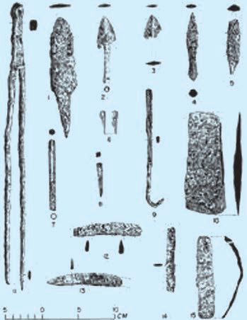<figcaption>Figure fig_ch01_p026_06 (Page 26)</figcaption></figure>
  <div class="page-content">
    <p>Chapter 2</p>
    <p>Sixth century BCE was a remarkable period in world history.
This was the time when Vardhamana Mahavira and Gautama
Buddha in India, Saratushtra in Iran, Confucius in China and
Heraclitus in Greece spread new ideas. In this period, drastic
FKDQJHVDOVRRFFXUUHGLQHFRQRPLFDQGSROLWLFDOÀHOGVDFURVVWKH
world. New political systems also came into existence. We will
discuss those changes in this chapter.</p>
    <p>Ideological Revolution in the Ganga Basin
During the 6th century BCE, it was mainly in the
region of the Ganga basin that new ideas emerged
in India. The material conditions of the Ganga basin
played an important role in the development of
new ideas. The following factors helped in the
formation of these material conditions.
</p>
    <p>z Widespread use of iron tools</p>
    <p></p>
    <p>z Increased agricultural production</p>
    <p></p>
    <p>z Growth of trade and cities</p>
    <p>By the 6th century BCE, a socio-economic system
based on agriculture and cattle had emerged in the
Ganga basin. This was not in harmony with the
Vedic practice which gave importance to rituals
DQG DQLPDO VDFULÀFHV $JULFXOWXUH GHSHQGLQJ
on cattle was adversely affected by the widely
Early Iron Tools
SUHYDLOHG SUDFWLFH RI DQLPDO VDFULÀFH DV SDUW RI
rituals. This forced people to think against the Vedic rituals.
The Vaishyas, who had acquired better material progress
through advancement in trade, desired a suitable higher status
in the society.
During this period, some classes emerged outside the existing
Varna system. The important group among these was that of
the rich Gahapathis. They were engaged in trade and owned
ODQG,QWKLVZD\WKH\ZHUHLQDÀQDQFLDOO\KLJKHUSRVLWLRQDQG
thus gained better status in the society. It was under this social
background that new ideological concepts were formulated.
Among these, the Jain and Buddhist philosophies were the</p>
    <p>26</p>
    <p>Social Science I</p>
  </div>
</section>
    </main>
    <footer>
      <div class="nav-bar"><span class="nav-bar disabled"></span><a href="index.html">☰ Index</a><a href="part_1_chapter_02.html">Chapter 2 (Pages 27-46) →</a></div>
      <p style="text-align: center; font-size: 0.85rem; color: var(--text-muted); margin-top: 2rem;">
        Kerala SCERT Class 9 Basic_science (English Medium) - Extracted Study Text
      </p>
    </footer>
  </div>
</body>
</html>
